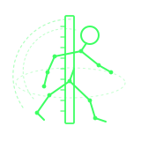

Verificação cruzada entre feature branches. O motor entrega o que o CI não vê. A pessoa decide.
O problema
Com agent e fábrica, várias branches avançam ao mesmo tempo. Cada PR pode estar verde — e as duas juntas, não.
O processo foi desenhado para o ritmo de sprint.
Humano e agent abrem PR em horas, não em semanas.
Unidade, contrato, trabalho duplicado. Quem herda, paga.
O que é
A minha branch ainda combina com a main?
A nossa branch ainda combina com a dele?
Não altera o código de ninguém. Não apaga teste vermelho.
Instala, aponta o conflito, devolve um relatório. Mora no Cursor e nos outros harness.
Segue, espera ou conversa — com o cruzamento já na mesa.
Funcionalidades
Pares de feature ativas, não só cada uma contra a main.
Tenta as duas juntas. O que cada um está escrevendo fica onde está.
Se juntas não constroem, aponta antes do review.
A mesma suíte nas quatro versões. O ponto está no quarto.
O modelo lê o que cada lado declarou, não só o que mudou no arquivo.
Só se os testes atuais não pegaram o conflito. A suíte do projeto aceita ou descarta.
O fluxo
A prova
passa
o que já estava na mainpassa
a feature sozinhapassa
a outra sozinhaquebra
o CI de um PR não vê issoTrês verdes e um vermelho: conflito de combinação. É esse o caso que o Lateral existe para apontar.
Banho de loja
O harness ganha os commands. Cursor, Claude, Kiro, Codex, Agy.
python -m lateral init
Em português, o que está fazendo — não o resumo do que mudou no arquivo.
/lateral-intent
Humano ou agent. O JSON vai para o harness; o markdown, para a pessoa.
/lateral
Banho de loja · o que chega
O código não combina. A pessoa vê onde as duas se cruzam.
Cada lado constrói. Juntas, não. Aponta antes do review.
Sozinho passa. Junto, a suíte vermelha. O CI de um PR estava verde.
O modelo compara o que cada lado declarou. A pessoa lê os dois textos.
Banho de loja · quem fecha
Humano no loop
Decide se segue, espera ou conversa.Ou o alerta não resiste à leitura. Integra.
Rebase, conversa, ou os dois ajustam o contrato.
Centavos de um lado, reais do outro. Isso não se vê comparando arquivo.
A loja · o caso
Preço deixa de ser real. Sozinha contra a main: testes passam.
A regra compara com 100.0 reais. Sozinha contra a main: testes passam.
quebra
O 100 da B é real. O preço da A já é centavo. O CI de cada PR não viu o outro.Por que GenAI
“Cobrar em centavos” de um lado, “frete abaixo de cem reais” do outro.
Só se os testes atuais passaram juntos. Se a suíte já pegou, não inventa.
Passa sozinho, quebra juntas: vale. Já quebra num lado só: descarta.
No máximo duas chamadas curtas por par. O contexto é o próprio repositório. A pessoa continua no loop.
O que não faz
Não há auto-fix. Não há “aplicar o patch e seguir”.
Se a combinação quebra, o teste fica. Quem herda precisa vê-lo.
Suíte verde nas duas não basta. Intenção e teste extra ainda entram.
Duas branches podem brigar sem tocar o mesmo path. O motor junta e testa, não só lista arquivo.
A conta
Uma rodada de dois agents no laboratório, Haiku 4.5. Gerar teste é uma chamada a mais, só se os testes atuais passaram.
Fecha
CI pergunta: a minha branch quebra a main?
Lateral pergunta: a nossa ainda combina com a dele?
Humano no loop
O motor entrega o que o CI não vê. A pessoa decide.